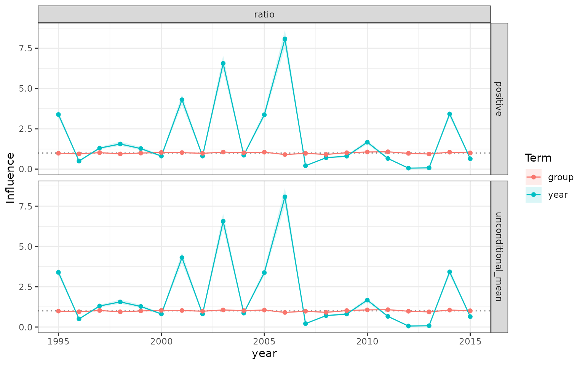
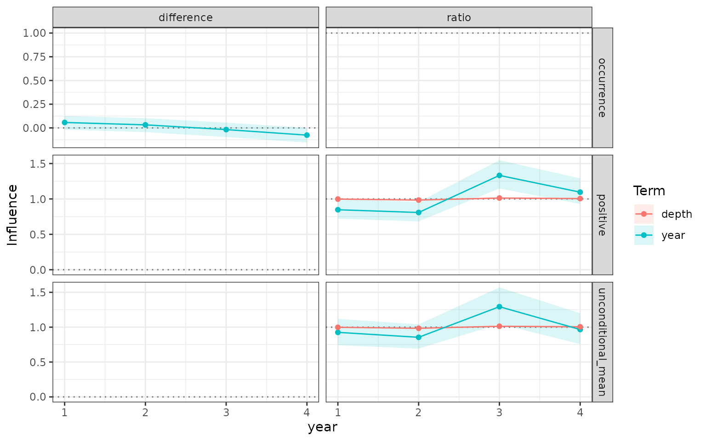

Why retain components?
A hurdle or delta model has an occurrence component and a positive component. Its unconditional expected response is
A zero-inflated count model instead combines an additional-zero probability with a count distribution:
An influence diagnostic should show both component-specific effects and the combined change in expected response. Treating one component as though it were the complete CPUE index can obscure why an index changed.
BRMS hurdle-lognormal example
A hurdle-lognormal model can be fitted with separate formulae for positive catch and the probability of a zero:
set.seed(42)
n <- 1000
year_effect <- data.frame(
year = 1995:2015,
value = rnorm(21)
)
sampled_year <- year_effect[
sample(seq_len(nrow(year_effect)), size = n, replace = TRUE),
]
group <- sample(c("treat", "placebo"), size = n, replace = TRUE)
simulated_cpue <- data.frame(
y = (1 - rbinom(n, 1, 0.3)) * rlnorm(
n,
meanlog = 2 + ifelse(group == "treat", 0.9, 0) + sampled_year$value,
sdlog = 0.2
),
year = factor(sampled_year$year),
group = group
)
fit <- brms::brm(
brms::bf(y ~ year + group, hu ~ 1),
data = simulated_cpue,
family = brms::hurdle_lognormal(),
chains = 2,
iter = 2000,
seed = 42,
file = "m1",
file_refit = "on_change"
)The vignette uses the prefitted object supplied with its source. Joint posterior draws are reduced directly to compact component and unconditional-mean contrasts.
library(influ2)
fit <- readRDS(system.file(
"extdata", "brms-fixtures", "m1.rds", package = "influ2"
))
hurdle_diagnostic <- influ(fit, focus = "year", ndraws = 250)
unique(hurdle_diagnostic$influence$component)
#> [1] "positive" "unconditional_mean"
summary(hurdle_diagnostic)
#> Influence diagnostic summary
#> Backend: brms
#> Family: hurdle lognormal (identity)
#> Focus: year
#>
#> term component maximum_absolute_link_influence
#> year positive, unconditional_mean 2.8045228
#> group positive, unconditional_mean 0.1003416
#> level_at_maximum
#> 2012
#> 2006
plot(hurdle_diagnostic, type = "components")
Positive, occurrence, and unconditional-mean influence from a BRMS hurdle-lognormal model.
Because this example has hu ~ 1, the probability of
occurrence has no year-varying model term. Consequently, its
unconditional year influence is the same as its positive-component year
influence. A varying hurdle formula would allow both components to
contribute.
glmmTMB hurdle example
For glmmTMB, the truncated conditional family and zero
formula form a hurdle model. The package simulates the conditional and
zero-formula coefficients jointly from the fitted covariance before
combining them.
set.seed(31)
n <- 480
cpue <- data.frame(
year = factor(rep(1:4, each = n / 4)),
depth = rnorm(n)
)
positive_mean <- exp(0.5 + 0.1 * as.numeric(cpue$year) + 0.2 * cpue$depth)
zero_probability <- plogis(-0.8 + 0.15 * as.numeric(cpue$year))
cpue$catch <- ifelse(
rbinom(n, 1, zero_probability),
0,
1 + rnbinom(n, mu = positive_mean, size = 2)
)
hurdle_fit <- glmmTMB::glmmTMB(
catch ~ year + depth,
ziformula = ~year,
family = glmmTMB::truncated_nbinom2(),
data = cpue
)
glmmTMB_hurdle <- influ(
hurdle_fit,
focus = "year",
ndraws = 500,
seed = 1
)
unique(glmmTMB_hurdle$influence$component)
#> [1] "positive" "occurrence" "unconditional_mean"
plot(glmmTMB_hurdle, type = "components")
Positive, occurrence, and unconditional-mean influence from a glmmTMB hurdle model.
Zero-inflated Poisson and negative-binomial models follow the same
pathway, with zero_probability and count
labels replacing occurrence and positive.
When inspecting a term with
plot(diagnostic, type = "cdi", term = ...), select one
component at a time. The top panel centres that component’s
effect on the same reference as its influence. Positive log-link and
lognormal effects appear as ratios about one, whereas a logit occurrence
or extra-zero effect remains in centred log-odds about zero. An increase
in extra-zero log-odds has the opposite interpretation to an increase in
occurrence log-odds. Neither is itself an unconditional catch
multiplier; use the combined unconditional-mean influence to assess that
quantity.
Dependence and memory
Component combination must be performed draw by draw, or with a joint
covariance or precision calculation. Multiplying independently
calculated marginal intervals is invalid because it loses dependence
between the two linear predictors. influ2 therefore
combines:
- BRMS population-level components draw by draw from the joint posterior; and
-
glmmTMBfixed components draw by draw from their joint maximum-likelihood covariance; and -
sdmTMBandtinyVASTlatent fields draw by draw from their sparse joint precision matrices.
Only derived focus-by-term draws are retained when requested. The much larger observation-by-draw arrays are never stored.
For lognormal models, a constant residual-scale adjustment cancels from an influence ratio. Distributional models in which the scale itself varies need a future scale-component adapter.
Spatial delta models
sdmTMB and tinyVAST delta models expose
occurrence and positive fixed effects and latent fields as named
components. Their fixed effects are combined into an unconditional mean
with joint covariance simulation. For example:
fit <- sdmTMB::sdmTMB(
cpue ~ 0 + as.factor(year) + depth,
data = cpue_data,
mesh = mesh,
time = "year",
family = sdmTMB::delta_gamma()
)
diagnostic <- influ(fit, focus = "year")
plot(diagnostic, type = "components")The combined delta mean also includes latent spatial and spatiotemporal fields. Both components are evaluated from the same sparse joint-precision draw before the unconditional mean is calculated, preserving posterior dependence rather than assembling independent marginal intervals. The motivation for this spatial extension follows Hsu et al. (2022).